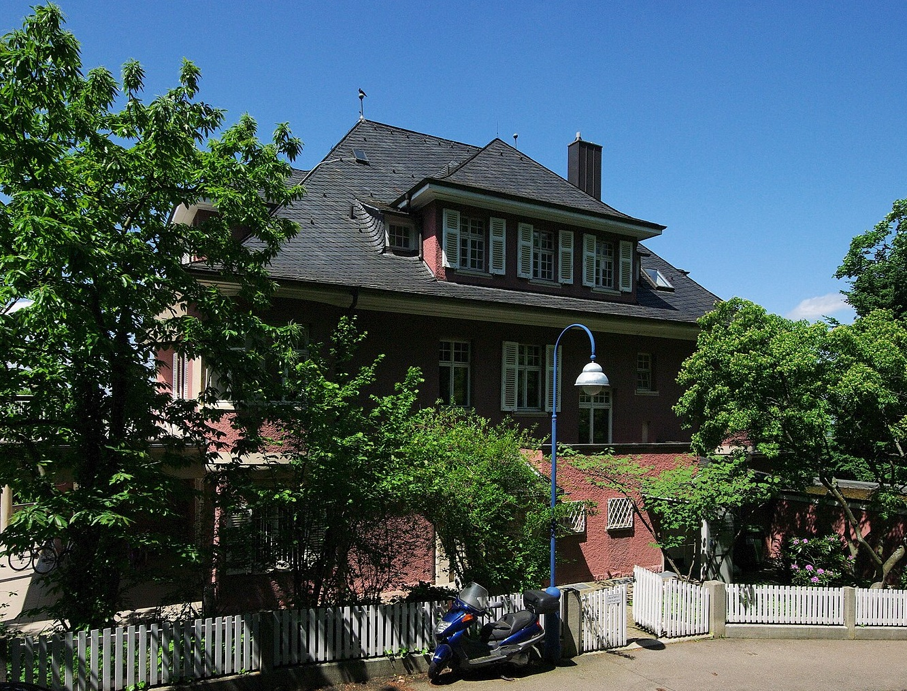

«Даже не известные нам вещи этого мира, вообще говоря, известны в том, что касается их типа.»
Эдмунд Гуссерль (1859—1938) считается основателем феноменологии как философского течения.
Биография
Гуссерль родился в еврейской семье и был вторым из четверых детей. Разговорным языком в семье торговца дамскими шляпками Адольфа Абрахама Гуссерля (1827—1884) и его жены Юлии Гуссерль (урождённой Зелингер, 1834—1917) был идиш. В Проснице поселился дед философа Хершл Гуссерль (1783—1827). В 1855 году отец основал там же галантерейное предприятие, при котором с 1860 года действовала мануфактура.
В десятилетнем возрасте поступил в реальное училище в Вене, а годом позже, в 1870 году, был переведён в государственную гимназию в Ольмюце. В 1876 году был принят в Лейпцигский университет, где начал изучать астрономию, математику, физику и философию; в 1878 году перешёл в Берлинский университет, где продолжил изучать математику у Л. Кронекера и К. Вейерштрасса, а также философию у Ф. Паульсена. В 1881 году изучал математику в Вене. 8 октября 1882 года защитил в Венском университете у Лео Кёнигсбергера диссертацию «К теории вариационного исчисления» и стал заниматься философией у Франца Брентано. В 1886 году, через два года после смерти отца, Гуссерль вместе с невестой принимает протестантское вероисповедание, в 1887 году оформляют брак, после чего Гуссерль устраивается преподавать в университете в Галле.
Его первые публикации были посвящены проблемам оснований математики («Философия арифметики», 1891) и логике («Логические исследования» I, 1900; II, 1901). «Логические исследования» становятся первой книгой нового направления философии, основанного Гуссерлем — феноменологии.
Начиная с 1901 года он встречает в Гёттингене и Мюнхене доброжелательную атмосферу и своих первых единомышленников (Райнах, Шелер, Пфендер). Именно в этот период он публикует программную статью в «Логосе» — «Философия как строгая наука» (1911) и первый том «Идей к чистой феноменологии и феноменологической философии» (1913).
В 1916 году он получает кафедру во Фрайбургском университете, которую до него занимал Риккерт.
Мартин Хайдеггер, самый способный ученик Гуссерля, редактирует его «Лекции по феноменологии внутреннего сознания времени» (1928). Затем последовательно выходят в свет «Формальная и трансцендентальная логика» (1929), «Картезианские размышления» (на французском, 1931), части I и II работы «Кризис европейских наук и трансцендентальная феноменология» (1936, полный текст рукописи был издан посмертно, в 1954 году).
Фрайбургский дом Э. Гуссерля, где он жил с июля 1937 года до своей смерти
После прихода к власти нацистов Гуссерль был на некоторое время уволен как еврей, согласно земельному закону Бадена; окончательно он был отстранён от должности только после принятия «Нюрнбергских законов», лишивших евреев гражданства. Хайдеггер весной 1933 года был избран ректором университета и вскоре вступил в НСДАП; вопрос о его личной причастности к травле Гуссерля и об их взаимоотношениях в этот период вызывает много споров. Гуссерлю было запрещено участвовать в философских конгрессах 1933 и 1937 годов как официально, так и частным образом; его старые книги не изымались из библиотек, но издание новых было невозможно. Несмотря на враждебность, которой окружил его нацистский режим, Гуссерль не эмигрировал (его дети выехали в США). Он умер во Фрайбурге в 1938 году от плеврита почти в полном одиночестве. Бельгийский монах-францисканец, аспирант Высшего института философии Германн Лео Ван Бреда, опасаясь гитлеровского антисемитизма, перевёз в Лувен библиотеку и неизданные работы Гуссерля, а также помог выехать из Германии вдове и ученикам философа. Если бы не вмешательство Ван Бреды, вдове Гуссерля грозила бы депортация в концлагерь, а его архиву — конфискация и гибель. Так в Лувене был основан Гуссерль-Архив — центр изучения наследия Гуссерля, существующий до сих пор.
Разобранный архив Эдмунда Гуссерля в Лувене насчитывает сорок тысяч неизданных листов (частично стенограммы), которые публикуются в полном собрании сочинений — Гуссерлиане.
Философия
Феноменология - это философия сознания.
Основная тематика многих трудов философа - это феноменология. Это учение о феноменах, которые воспринимаются сознанием, как возникновение смысловых образов предметов и действий. Переход к идеализму нового типа. Все началось со слов «назад, к самим вещам», своеобразное противопоставление присущему в то время возврату к философии Гегеля или Канта и др. Феноменология Гуссерля - это обращение к опыту познающего сознания. То есть это возврат человеческой мысли к тому, что было до появления всех теорий и направлений. А именно к осознанию и пониманию того, что чувствует, видит и осязает человек во время изучения мира.
Гуссерль предлагал вернуться к пониманию мира, когда структура ещё только создаётся, и мир не наполнен ненужными связями и объектами понимания мира, именно так, полгал он, может открыться истинный смысл. Мир - это не что-то осязаемое, это всего лишь феномен сознания, который представляет собой основу всех дальнейших действий. Душевная жизнь не подлежит никакому анализу. Это как организм, который можно рассматривать внешне сколько угодно, но для того чтобы понять сущность, нужно будет вернуться к истокам.
К тому, с чего все начиналось. Феноменология положит начало прямой философской интуиции и совместно с ней породит такую науку, которая получит ответы на все вопросы, не прибегая к анализам и доказательствам.
За основу в своих работах Гуссерль брал именно принцип созерцательности. Очевидное в его философии являлось важнейшим принципом. То есть то, что изучается, должно быть на виду, не скрыто ничем, оно не должно требовать применения никаких научных знаний при непосредственном изучении. Большая роль отводилась именно чувственному созерцанию, то есть это восприятие человеком всего, что его окружает. Основой его философии является не только созерцание реальных объектов, но и созерцание сущности. Философия - это наука, которая в качестве основного постулата использует идею единства всего сущего, и объясняет с его помощью все основные понятия. Феноменология действует при помощи редукции. Понятие феноменологической редукции - это освобождение сознания от наивности при взгляде на окружающий мир. То есть происходит отключение от реального мира, и затем при помощи трансцендентальной редукции осуществляется переход к чистому сознанию. Фундаментальное свойство сознания - это способность быть направленным на объект. Это может быть не только реальный объект, но некая сущность или какое-либо значение. Таким образом и проявляются различия между реальным и интенциональным в сознании (ноэзис и ноэма).